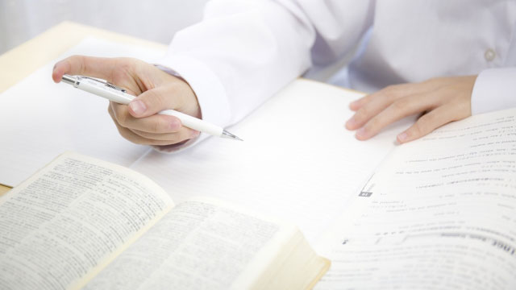

かつて私は年末から正月にかけてゆっくり過ごした記憶はありません。30年以上に渡って塾講師として、進学塾の経営者としてこの時期受験生指導に携わっていたからです。
私の塾は大晦日から元旦にかけて塾内で徹夜で勉強する「徹夜特訓」があり、講師と受験生が元旦の朝まで過ごすという過酷な（？）行事があったのです。（今はやっていませんが）
「さすが塾だ。やることがエグい！」と思うからも知れませんが、これはそんなに驚くようなことではありません。
部活の合宿と同じで、試合前に監督やコーチと選手が寝食を共にして心を一つにするようなものです。
だから塾も合宿という形で、いわば講師と生徒が外界から密閉された空間で集中力と団結力を高めていたわけですね。
ま、いってみれば本番に備えての前哨戦でしょうか。
しかしその「徹夜」もだいぶ前に廃止されました。理由は主に親からの訴えで、子どもの健康に対する不安や心配の声が上がるようになったからです。
親の心配も無理はありません。高校受験も大学受験も昔より前倒しになり、1月に入るとすぐに入試が始まるからです。
徹夜特訓で体調を崩したまま本番突入など本末転倒でしかありません。
まあ時代も変わったということでしょう。
ただ、親の心配という点で言うなら今の親は子どもの受験について心配し過ぎではないかという印象があります。
これまでも何度もこのブログで話してきたことですが、心配は何の役にも立たないからです。それどころか心配は子どもに対する不信感—お前は大丈夫なのか？—という疑いをぶつける行為なのです。
親の不安を子どもにぶつけない
親の気持ちは理解できないわけではありません。
「ふだん勉強してないからダメじゃないのか」
「全部落ちたらどうしよう」
「試験前カゼでも引いたら大変だ」etc
このように心配し始めたらキリがありません。
こうして受験生たる我が子をハラハラと見守りハレモノに触れるように扱ってしまうわけですが、子どもからしたらこのような親の心配は有り難迷惑でウザいものでしかありません。
もっと我が子を信頼しましょう。
子どもの可能性の大きさを信頼するのです。
私たちは職業柄、中学生や高校生の途方も無い集中力のすごさと急激な「伸び力」を知っています。
むしろ親の方が我が子の「すごさ」に気づいていないことが多い。それに直前期は子ども自身が「戦うスイッチ」が入っているので不安はあまり感じないものです。（もちろんゼロではないが）
かえって親のほうが自分の不安な思考の連鎖に巻き込まれアタフタしているのです。
だから私などはそのような「不安な親」こそが不安でした。
「このお母さん大丈夫かな！？ずいぶん情緒不安定なようだが…」とよく心配になったものです。
親が我が子の受験から学ぶとしたら次の2点ではないかと思います。
1． 自分自身の「不安」を克服し子どもを信頼すること
2． 子ばなれの良い「きっかけ」とすること
この時期の親の「不安」「心配」は子どものことであるより、自分の抱えている不安、心配が子どもの受験をきっかけに浮上したものと考えるとよいかも知れません。
先にも言ったように不安な思考は同じような不安を次々と引き寄せます。自分の受験生時代のトラウマや、日頃子どもとの接触で不快や不安を引き起こすような出来事の記憶、それらにまつわる感情や思いが一気に「不安のカタマリ」として浮上している場合です。
だからそういう不安や心配にとらわれていると気づいたら「これは自分の不安だ。子どもとは関係ない」と切り離してみましょう。
このように「不安・心配」を出来事（状況）から引き離すことで「安心・平安」の境地に立つことができます。そうなれば子どもの受験に対しても冷静にやるべきことにのみ対応できるでしょう。「不安」を子どもにぶつけることもありません。
受験期こそ子ばなれのチャンス
学びの2点目は受験こそ「子ばなれ」のチャンスという認識です。
今の時代、なかなか親ばなれ子ばなれしにくいというというのは事実です。
しかしいつかは子どもは外に出て行きます。
（出ていかない者も増えているが）
私が思うに親や教師の最大の努めは子どもを自立させることにあります。
あくまで昔と比べてですが、今の親は極端に子どもを抱え込んでいます。20〜30年前と比較してもこれは顕著です。
案の定若者は自立心に乏しい傾向にある。
（もちろん今の若者にも良い点はたくさんあるが…）
だから「受験」という、子どもが親の助けなしに自分の実力で勝負しなければならないシチュエーションこそが貴重な瞬間なのです。
当たり前ですが、試験場に行き子どもの代わりに受験することはできません。迫り来る入試で子どもが懸命にガンバっているとき（まさに今）も親ができることはほとんどありません。
子どもの努力を見守るしかないのです。
でもこの機会に子どものことは子どもに委ねてあとは信頼するという姿勢が、子どもの自立を促す第一歩になるのだと思います。
先の親の心配や不安も、自分が子どもの手助けを十分果たせないことへの焦燥感の現われかも知れません。
そうして受験が終わればまた元に戻るのではなく、すなわち子ども扱いせず我が子を大人として認めていきましょう。
もちろん一気に関係を変えるのではなく、徐々に子どもを一個の人間（大人）として扱っていくということです。
このように「受験」を前向きにとらえ、子どもの可能性を信じ大人として扱うきっかけと考えれば親子間に良い結果をもたらす機会となるでしょう。
受験生の親の皆さん。
心配するだけが親の務めではありません。
どうか我が子の持つ潜在的な力、その可能性を信じてあげてください。
大丈夫です。お子さんはあなたの考える以上にたくましいのです。